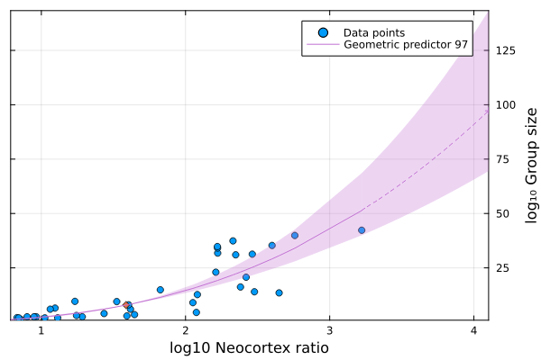

Investigating Dunbar’s number
In a seminal paper1 from 1992, Robin Dunbar extrapolated from the brain measurements of different animal species and their typical social group sizes, to make a now famous prediction about human social group size. His analysis led him to what has become known as Dunbar’s number, 150, which has had multiple applications in different organisational contexts.
1 Dunbar, R. I. M. ‘Neocortex Size as a Constraint on Group Size in Primates’. Journal of Human Evolution 22, no. 6 (1 June 1992): 469–93. doi: 10.1016/0047-2484(92)90081-j.
2 Patrik Lindenfors, Patrik Lindenfors, Andreas Wartel. ‘“Dunbar’s Number” Deconstructed’. Biology Letters 17, no. 5 (1 May 2021): 20210158–20210158. 10.1098/rsbl.2021.0158.
Prompted by a definition in this blog post, and out of pure curiosity, I searched for a bit more information and stumbled on an relatively recent article by him in which he gives an overview of his research. The article sounded a little snarky to me and snarkiness continued in the comments. It seems he was responding to some research2 published by a group at Stockholm University who ran a set of modern statistical tools over the original dataset and were unable to draw the same conclusions that Mr Dunbar had. This group then responded to Dunbar’s article by writing another article explaining their position in more detail.
Since working with real data and reading the work of different research groups is a fantastic way to learn, I decided to do a bit of amateur data analysis. I learned a lot and hopefully by writing down what I saw, I’ll learn even more.
Fitting the data
On a double log-log plot, my grandmother fits on a straight line - Fritz Houtermans
Here’s an example of a similar data set to the one used in the original studies. The data is tabulated in the paper but it’s a lot to copy out so I took a similar data set published by the same author in a later paper. Figure 1 is a plot of the data. For multiple species of animal, it shows the ratio of the size of the neocortext to the size of the rest of the brain (\(C_r\)) on the horizontal axis and the average social group size (\(N\)) for that species on the vertical axis.

Neither Dunbar nor his critics used the data in this form however, they used its logarithm. This is a common technique used under the assumption that it will make skewed data (as this is) appear more symmetrical (normal). There is no explanation of the reasons for the transform in this particular case. Nonetheless it has an important effect on the results. We’ll come back to this point later. Here’s the transformed data.


I’ve presented it in exactly the same way as Dunbar’s paper. Although the data is slightly different the similarity is clear. Also, it does look a bit more like a straight line now and the variance is a little less pronounced. I’m not sure how valid this kind of subjective judgement is.
Figure 3 overlays Dunbar’s original result onto this data set and there is no surprise. The line (the equation for which is given explicitly in the paper) is projected out to show the predicted human mean group size which can be seen to be close to 150. This is the source of Dunbar’s number.

I’m tried to reproduce this result but for now we note that for the analysis to work we have to make the strong assumption that an errors in the measurements are normally distributed. The choice of using the log-log transformation another strong assumption that we’re taking as fact for the moment but we will return to it.
The parameters of the line are determined using linear regression which attempts to find the best straight line through the points. The question arises: what is the best straight line? It turns out that there are multiple ways of defining best fit and depending on which you chose you can get different results.
The most common type of linear regression is most commonly called Ordinary Least Squares3 (OLS) where the the best line is chosen to be the one that minimises the squares of the vertical difference between each point and itself. This is the most basic regression technique taught in statistics classes.
3 Dunbar calls it LSR (Least Squares Regression) in his paper.
The problem with OLS, as Dunbar points out in his original paper and again in his recent article, is that by minimising only the vertical distances there is an implicit assumption that there are no errors in the measurements on the x-axis, which is not true in this case.
To take these (unknown) error margins into account in both axes we can choose to minimise the geometric distance between the points and the line. This is called Geometric Mean Regression4 in much of the modern literature. The geometric distance is the area between the point and the line, the triangle spanning both the distance along the x-axis and the distance along the y-axis.
4 Dunbar calls it RMA (Reduced Major Axis) but just as heads up it turns out the the web page that Dunbar references in his article to explain RMA is wrong. For a neat overview of the main types of regression I’d recommend the paper by Xu, S. (2014). A Property of Geometric Mean Regression. The American Statistician, 68(4), 277–281. doi:10.1080/00031305.2014.962763.
One cited problem with geometric regression is the extra difficulty in the interpretation of confidence intervals for the parameters. I haven’t seen that as being any more of a problem for this type of regression than for any other but I might be wrong. Please read the paper if you are interested.
I did both geometric and OLS regression to compare the difference. Figure 4 shows the results of both types of linear regression transformed back into the original, untransformed scales.

This confirms Dunbar’s assertion that OLS considerably underestimates the slope of the regression line, as compared to geometric one.
There are two other important things to note here beyond the difference between the two lines. First notice the upward curve of the regression lines over the original data. This is a result of the log transformations, essentially producing an approximately exponential fit due to the differing scales of the two axes.
The second thing to notice is the wide spread of the confidence interval for this line. This is also exaggerated by the log transformation. In fact, the validity of the confidence intervals after transformation is highly questionable. See Feng et al. for more details.
Notwithstanding the above caveats, what happens if we extrapolate the curve in an attempt to predict a typical group size for humans?

A direct extrapolation of this data using the geometric fit gives a group size prediction for humans as very approximately ~100. This well below Dunbar’s result but some difference should be expected due to the different data. It does however highlight the disproportionate effect of the log-log transformation on the prediction. It also puts into question the conceptual validity of extrapolating so far outside the available data. Remember that this is the spread of the confidence interval of just the mean itself and does not extrapolate from the variance seen in the rest of the data. This is a key point and an interesting realisation for me personally.
Until now we have collected a series of assumptions about the data that we’ll look at in turn in light of the analysis.
Log-log transformation
It is evident that by taking the log-log transformation of the data we have made the confidence intervals of the predictions extremely wide. Was this choice justified? Let’s take a look at the distributions of the data before and after the transformation.

They show that the transformation has gone some way to make the distributions more symmetrical, especially the group size. It might be interesting to see the results without taking the log of the neocortex ratio but it’s confirmed that this transformation does make sense in this case, even though it does introduce other problems elsewhere. It’s a trade-off I guess.
Distribution of errors
It was assumed that the errors in the measurements in both axes were normally distributed. Figure 7 takes a closer look at the distributions of the residuals of the log transformed data against their regression line.

This residuals are reasonably close to a normal distribution which is one possible justification for the log-log transformation on the data.
We would like to check for the presence of heteroscedasticity which can cause ordinary least squares estimates of the variance (and, thus, standard errors) of the coefficients to be biased, possibly above or below the true of population variance. A quick plot of the residuals doesn’t give us too much cause for concern.

We might like to check that more formally with a Breusch-Pagan test. Again this can be taken as further justification for the log-log transformation.
Confirmation bias
More recently additional evidence has been gathered to support the original Dunbar number of 150. As we’ve seen, this number is at best a very rough guess of the mean and doesn’t include the potential variance over the extrapolated range. Nonetheless there is a very real possibility of confirmation bias in later results. The phenomena starts when people latch on to these specific numbers and then send their correlates to Dunbar who then catalogues them as supporting evidence.
What have military units got to do with Christmas card lists? Christmas card lists are definitely a social phenomenon but it if far from clear which band they should be in. If the results had been 50, say, then it would have been taken as evidence for that smaller group size. It’s a post-hoc correlation.
Conclusion
So, after all this analysis, I learnt a great deal about regression considerations. Least squares never seemed so controversial until I started this. My results came in below Dunbar’s original results. This means nothing, of course, but it does lend some credence to the critics suspicions which would be compatible with my little investigation here.
I also learnt a lot about what can and can’t be said about Dunbar’s number as a concept.
First, none of this says anything about the nested structure of the group sizes and other predictions made subsequently, which have also been used widely5.
5 The Team Topologies book uses Dunbar’s work as a basis for team size discussions. For them, “Dunbar’s number” (as defined in the glossary) actually refers to results from Dunbar’s later work on nested group sizes and is related but different to Dunbar’s number as usually understood.
Secondly, it is most definitely not a maximum or upper limit, as often stated. We need to be careful not to confuse the confidence interval of the sample mean with a measure of confidence of the prediction.
It is clear to me now that stating Dunbar’s number as 150 is misleading and misses a great deal of context. Even assuming the validity of the model and the regression, it is a predicted mean value extrapolated far outside the underlying data with extremely wide error bars and needs to be treated with a great deal of caution. The prediction has even wider margins to the point of losing some of its meaning as a useful concept.